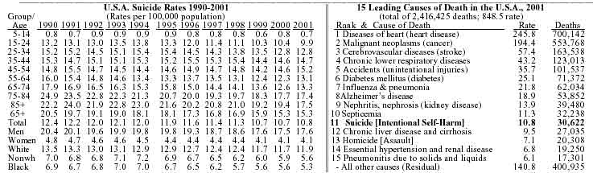

http://www.netvalley.com/road_stat/firearms.htm
Григорий Громов, США, шт. Калифорния
Огнестрельное оружие в домах американцев:
фактические данные и статистические ловушки
Видимо, автор живет в Америке с детства или является ребенком эмигрантов. Стилистика часто весьма не русская, да и запятые и проч.... Править не буду, - лениво. Смотрите на факты.
Cамо стреляет? - возможно, однако... очень не часто.
Судя по откликам на онлайн публикацию про Факторы риска на автомобильной дороге, наиболее заинтересованные из первого потока вопросов поступили по поводу таблицы - в начале самом раздела "Введение"- из которой можно заключить, что автомобили, как источник несчастных случаев, в десятки раз опаснее огнестрельного оружия оказываются в Америке.
Таблица в вышепомятнутой статье рассчитывалась по статистическим данным конца 90-х годов. Ниже приводятся последние данные, которые доступны для анализа по данной теме:
| Основные причины
несчастных случаев с фатальным исходом в США, 2001 | |
| Motor Vehicle (aвто/мото-средства передвижения) | 42,900 |
| Poisoning (отравления) | 14,500 |
| Falls (падения) | 14,200 |
| Suffocation (подавились - пищей и т.п.) | 4,200 |
| Fires, Flames and Smoke (пожар и др. источники огня и дыма) | 3,900 |
| Firearmes (огнестрельное оружие) | 0.800 |
Существуют среди иных базовых мифов в том числе и едва ли и не общая уверенность в неотвратимой силе утверждения: и незаряженное ружье раз в год стрелеяет. Соответственно и практически самоочевидным считается, что с ростом общего числа хранящегося у граждан оружия естественным образом растет и число спонтанно неотвратимых от того фатальных потерь. Между тем, статистика последних 100 лет регистрации несчастных случаев с огнестрельным оружием в Америке отнюдь не подтверждает таких опасений. Для правильного понимания содержания приводимой ниже таблицы необходимо учитывать также постоянный рост общего числа вооруженных граждан в Америке за те же 100 лет. К концу 90-х годов на руках у американских граждан находилось уже более 230 миллионов единиц стрелкового оружия.
Сравним три раздельно взятые года в США века минувшего по числу погибших от несчастных случаев, которые происходили в этой стране с огнестрельным оружием, находившимся только и исключительно в собственности граждан. Иное оружие в обсуждаемую статистику не включается - только то, что на руках у населения страны:

Последне десятилетие видимо стоит для иллюстрации общей тенденции показать боле детально:

Отметим также (в качестве дополнительной информации, поясняющей некоторые из вполне видимо ясно различимых по данным таблицы тенденций), что общее число огнестрельных ранений, регистрируемых за год в приемных отделениях скорой помощи американских больниц уменьшилось с 64 тысяч в 1993 году до 39 тысяч в 1997. Однако в процентном отношении все еще подавляющее большинство случаев убийств оказывается связано с огнестрельным оружием. В 2000 году 66 процентов из 15,5 тысяч убийств было совершено огнестрельным оружием. Именно это обстоятельство, кроме прочего, больше иных многих обстоятельств и вдохновляет сторонников ужесточения ограничений на продажу населению огнестрельного оружия на все более громкие утверждения, что корень проблемы борьбы с особо тяжкими насильственными преступлениями в затруднении доступа к орудиям совершения таких преступлений.
Ниже мы еще коснемся такого типа заявлений, а пока отметим лишь, что в качестве сколько-то заметного - на фоне других факторов риска - источника несчастных случаев, оружие вряд может рассматриваться. Потому что в целом за год - от самой разной природы несчастных случаев - погибают в США около 90 тыс. человек. Почти половина из этого числа уходят из жизни по итогам автопроисшествий. Между тем от несчастных случаев с оружием погибают в годовом исчислении в Америке ... около 800 человек. То есть, менее одного процента от общего числа несчастных случаев с фатальным исходом происходят в США по причине неосторожного обращения с огнестрельным оружием. И это, напомним, в стране, где на руках у населения свыше 200 миллинов единиц такого оружия.
Что касается случаев гибели людей от огнестрельного оружия вообще, то - как видно из приведенных выше таблиц - сравнительный вес несчастных случаев внутри этой статистики тоже относительно малым всегда оставался. То есть, перефразирую известную об том фразу, и незараженной ружье, конечно тоже раз в год стреляет, но все-таки - как то видимо достаточно ясно видно из приведенных выше таблиц - заметно реже, чем заряженное.
Несопоставимо больше людей погибали в ситуациях, связанных с огнестрельным оружием, которые можно было квалифицировать, как самоубийство или умышленное убийство. То есть это уже может быть предметом изучения медицинской (например, психиатрической) - в случае самоубийств, или криминальной - статистики, которые в данной работе не рассматривались. Не обсуждались выше причины, по которым иногда люди умышленно направляют свой автомобиль в сторону обрыва на горной дороге - случаи такого рода самоубийств к сожалению не такими уж и редкими остаются, или - в иной ситуации - к примеру, в состоянии аффекта, направляют автомобиль на своего обидчика, чтобы раздавить - тоже не такие уж редкие эпизоды криминальной хроники.
Никакими выше обсуждавшимися средствами снижения аварийности (ремни безопасности или системы автоблокировки тормозов, как впрочем и профиль дороги сам по себе), нельзя снизить число таких трагических инцидентов, когда автомобиль оказывается орудием умышленного убийства или самоубийства. Никак на решение человека сбросить себя самого (а то и с семьей вместе) в автомобиле с обрыва, или же - в совсем другой ситуации - наехать на другого человека или таранить его автомобиль, все известные средства повышения безопасности не влияют и число таких умышленных использований автомобиля во вред человеку снизить, ими нельзя - другая проблема совсем потому что. Не от этой стены гвоздь.
Так же, впрочем, как и все известные средства повышения безопасности газовых горелок еще никому, к сожалению, ни разу не помешали свести счеты с жизнью, отравившись газом в собственной кухне.
Поэтому казалось бы и должно быть очевидно, что статистика несчастных случаев на дороге может сравниваться только с аналогичной ей статистикой несчастных же - и только! - случаев в обращении с оружием, бытовыми газовыми приборами и т.д., но ни в коей степени со случаями возможных умышленно применений всех этих - и любых иных (хоть и тех же кухонных ножей, допустим) - средств во вред с тяжким от того последствиями.
Принципиально разные статистические данные оказываются и потому любые - вольно или невольно - попытки их смешивать в "общую сумму" (особенно часто встречающиеся в дискуссиях о находящихся на руках американцев сотнях миллионов единиц разнообразного огнестрельного оружия), являются всегда принципиальной методической ошибкой, хотя и позволяют не так уж редко именно таким образом "доказывать" никаким иным - корректным - способом недоказуемые утверждения. Потому видимо и все еще - несмотря на многократно доказанную их несостоятельность - остаются столь популярными.
Обсуждались только несчастные случаи вообще и - в основном - те из них, где причиной оказывался автомобиль. То есть убийства, самоубийства и несчастные случаи - это три принципиально разные категории причин гибели людей. Тот факт, что в каждой из них иногда участвует - как инструментальный фактор - к примеру, оружие огнестрельное, автомобиль, бытовой газ или кухонный нож, никак не дает оснований объединять их только по этой причине в общее число для каких-либо выводов вообще, и уж во всяком случае хотя бы отдаленно связанных с предметом данного анализа.
Однако, поскольку - как показывает опыт такого рода обсуждений - вопрос в любом случае возникает, независимо от темы, по всем трем источникам гибели людей от огнестрельного оружия, то и попытаемся ниже дать несколько более подробный ответ. Причина, по которой мы считаем возможным и даже целесообразным отвечать столь подробно на данный вопрос по сути все та же - статистические ловушки, исследованию которых мы посвятили выше уже столько внимания. Данный вопрос в свою очередь дает еще один повод пояснить характер наиболее из них характерных. Однако сначала, чтобы до технического анализа статистики как таковой ясна была природа предмета обсуждения еще раз уточним позицию автора на предмет анализа, которому собственно и посвящено данное приложение.
Итак, вернемся к обсуждению природы данных в приведенной выше таблице потерь за 1991-99 г. от огнестрельного оружия и - самое главное - как ограничения на продажу такого оружия могли бы влиять на те данные. Выделяем здесь этот вопрос по той - и только той - причине, что именно он и форсирует внимание обычно к данным таблицы 1 из Введения к статье. Только бесконечные споры по именно этой теме - условия доступа населения к оружию - и есть причина, что нигде и ни в одном контексте нельзя употребить сравнения чего бы то ни было - в данном случае автомобиля - с огнестрельным оружием по степени его социально опасности, чтобы немедленно не начался с того каскад недоразумений от неверного толкования приведенных данных и пр. суеты в решете. Зряшной суеты но и неизбывной одновременно. Особенно - больше иных стран - лихорадит от таких дискуссий уже много лет Америку. Но начнем тогда уже по порядку.
В самом ли деле, кто-то полагает, что в типовом случае самоубийства - или скажем убийства - причина оказывается в легально доступности оружия законопослушным гражданам? Это и есть центральный уже много лет в Америке предмет такого рода дискуссий. Если говорить про самоубийства, то вряд ли кто предполагает, что нехватка огнестрельного оружия остановит потенциальных самоубийц, если не сняты окажутся те глубинного происхождения причины, что собственно и толкают человека на такой крайний шаг. Однако причины эти - сами по себе - лежат куда как далеко от обсуждаемой области - о свободе доступа к оружию для законопослушных граждан. То есть искать связь между относительной доступностью того или иного орудия самоубийства и самим по себе актом его совершения как таковым видимо нелепо. Однако эта сторона предмета дискуссии обычно остается в стороне - видимо сторонники запретов понимают, что в данной области слабость их аргументации будет слишком заметна.
Много чаще пытаются жонглировать данными из криминальной статистики. Однако, в случае умышленных убийств преступники владеют оружием и вовсе вне какой-либо зависимости от того, какие на этот счет принимают законы в разных штатах или даже федеральные удлэения по Америке в целом. Все законы потому как адресованы ведь только законопослушным гражданам. Именно это обстоятельство чаще всего оказывается критически важным для понимания сути почти любой такой дискуссии.
По существу доказательству именно этого - и так наверное давно многим самоочевидного - факта было посвящено, к примеру, в 1997 г. специальное исследование, которое выполнило Министерство юстиции США. В тюрьмах Америки провели беседы с большим числом заключенных (разумеется, той их части, для которых эти беседы уже ничего изменить в их судьбе не могли - приговор состоялся и т.д.), которые сидели по статьям, связанным с применением огнестрельного оружия. Выяснилось - опять же в который раз - что свыше 80 процентов из них приобретали себе оружие преступления по тем или иным нелегальным каналам.
Другими словами, если б в США произошло вдруг невероятное и кто-то успешно посягнул на святое святых - отменили бы поправку к конституции, гарантирующую гражданам Америки право на владение оружием, соответственно и полностью закрыли легальные источники оружия поступления к населению - то на количестве преступлений, связанных с огнестрельным оружием, это всего лишь ... никак бы не отразилось. Потому что сузило бы временно доступ к оружию всего лишь на 20 процентов. Как реагирует любой рынок - не исключая и черный рынок огнестрельного оружия -- на рост спроса на 20 процентов? Мгновенным откликом в росте поставок - только и всего. Чуть приподниметмся цена на короткое время м все. К примеру, после 911 несколько месяцев подряд спрос на такое оружие в Америке увеличивался весьма значительно. Оружейные лавки продавали тогда в разы больше пистолетов, ружей и пр. аммуниции. Цена кажется даже и не шелохнулась. Во всяком случае не так, чтобы кто-то про то отметил в то время. Что же тогда ожидать - каких таких радикальных изменений в криминогенно обстановке в Америке, если бы спрос на оружие на черном рынке повысился на ... 20 процентов? Просто никаких изменений. Для любого рынка такого рода колебания едва ли и не норомально сезонное явление.
Увидеть же хоть какой от столь крутой меры - взяли гипотетически крайний случай полного запрета продажи оружия в Америке - статистически значимый результат было бы крайне трудно, если и вообще предположить что он бы существовал.. Особенно же трудно было бы различить столь небольшие колебания - если и допустить что хошь какое пусть малое, но изменение бы наблюдалось - на общем глобальном об том треде, то есть с учетом долговременно устойчивой тенденции к снижению такого рода преступлений в Америке, ( снижению, достигаемому совсем другими методами и средствами), которая видимо ясно видна из приведенной выше таблицы.
Еще один пример - совершенно классический в этом ряду случай - две во многом аккуратно сопоставимые страны. Еще в начале 90-х статистику криминальную сопоставляли для England/Wales - с одной стороны, и Швейцарии - с другой. В каждой из этих стран статистика убийств на одном уровне была - 1,1 на 100 тыс. народу от такой напасти там погибали тогда. В Англии однако народ совсем и полностью уже ни одно поколение безоружный, а в Швейцарии по закону почти все дееспособные мужчины ОБЯЗАНЫ держать дома автомат с боеприпасами к нему. То есть и здесь выясняется, что никак оно - это самое оружие в руках законопослушных граждан - само по себе на криминальную обстановку и вовсе не влияет. Однако, в любом случае - при любых интерпретациях данных приведенных выше таблиц - заведомо не корректно было бы смешивать в одну кучу для целей статистического анализа (или любых иных) все указанные выше три группы погибших от огнестрельного оружия: несчастные случаи, самоубийства и убийства. Принципиально разные события. В таблице 1 (во "Введении") сопоставляются - поэтому еще раз напомним - между собой разных причин, но только несчастные случаи. Потому вывод там был сделан ровно о том, насколько опаснее автомобиль, в качестве источника несчастных случаев, чем другие источники таких происшествий, включая и огнестрельное оружие.
Согласно данным той таблицы, автомобиль создает в 20 раз больше несчастных случаев с фатальными исходами, чем огнестрельное оружие. Реально это различие заметно больше - мы выбрали наиболее консервативную из известных оценок - но самое главное, что это различие быстро увеличивается. Уменьшение числа несчастных случаев с огнестрельным оружием происходит, к примеру, как то видно из таблицы (см. выше), происходит несопоставимо быстрее, чем аналогичные улучшения в области безопасности автотранспорта. И это в целом понятно - слишком уж большой оказывается разница в сложности сравниваемых источников несчастных случаев. Научиться владельцам оружия правилам его безопасного хранения в семье допустим, или обращения с ним в тире или на стрельбищах, много проще задача сама по себе, чем в случае необходимости постоянного улучшения поведения людей на все более забитых машинами дорогах, поднятия качества самих этих дорог и пр.
В целом у населения США на руках около 230 млн единиц оружия. Так уж оказалось, что и водят они тоже около 220 млн автомобилей. Так вот в результате несчастных случаев с оружием погибают около 800 человек в год, а с автомобилями - более 40 тысяч.
Но это только по вопросам к таблице 1 из Введения выше были ответы. Теперь некоторые уточнения общего порядка. Из 230 млн. единиц общего числа оружия огнестрельного, что держат у себя америкацы, около 80 млн. - пистолеты и прочие револьверы. Владельцев же оружия -по головам уже если а не стволам считать - около 65 млн. Из коих половина с револьверами да пистолетами тока - ничего более серьезного не имели. За то уж вторая половина ...
При все при том в целях преступных или которые могли быть такими квалифицированы ежегодно использовалось не более 0,2 процента от помянутого выше числа стволов. Пистолет чаще - 0,4 процента. Напомним, что как выше было установлено, из тех долей процента от всего оружия, что были использованы в преступных целях почти все они попали к тем преступникам по нелегальным каналам. То есть с учетом всего вышеизложенного можно сделать вывод что за редчайшим исключением, на том уровне, где статистика уже оказывается бессильна по малости выборки, легально приобретаемое гражданами оружие никогда и ни в каких преступлениях не участвует. Потому и никакие вопросы дискуссий о легальной продаже населению оружия никак не могут влиять на уровень преступности, хотя бы той простой причине, что в криминальных ситуациях всегда применяется - практически всегда - совсем другое оружие.
Вместе с показанным в таблице выше общим снижением числа убийств в стране падает естественным образом и интерес у домовладельцев к почти обязательному когда-то хранению дома оружия. Только 40 процентов американских домовладельцев хранят у себя оружие, тогда как еще в 1973 году оружие имелось в половине всех домов.
С пистолетом ходят почти регулярно - едва ли и не каждый день - не менее одного из 50 всех взрослых американцев. То есть, около 4 млн вооруженных огнестрельным оружием людей почти в любой день оказывается на улицах Америки.
Теперь - после того, как некоторая цифровая хотя бы в общих чертах ясность по проблеме возникает, надеюсь, у читателей, переходим к обсуждению цели этого приложения - статистических ловушек в такого рода анализах.
"Статистика знает все" или ... рассказы об оружии
Речь здесь пойдет о крайней осторожности, с которой следует воспринимать статистические выводы вообще и особенно, когда они приводятся в СМИ для обоснования или, того хуже, подтверждения верности позиций одной из сторон в общественно значимой дискуссии. Ниже приводится очередной - видимо совершенно ясный в своей исчерпывающе завершенности и дидактической прозрачности - тому пример.
Департамент здравоохранения Агенства Рейтер распространил пресс релиз о впечатляющих в своей убедительности выводах, которые по существу закрывают дискуссию между сторонниками разрешения гражданам владеть оружием и их оппонентами, призывающими постоянно наращивать разного рода препоны для оружиевладельцев в США. Заголовок сообщения говорит сам за себя: US States with More Gun Owners Have More Murders ( "В тех штатах, где больше оружия у населения, там и больше убийств совершается")
Какие еще могут быть после того сомнения? Dr. Matthew Miller of Harvard School of Public Health in Boston, Massachusetts сообщает миру о том, что исполненные в этом храме высокой науки исследования, ясно показали, что в 6 штатах Америки, где согласно данным переписи имеют народ более иных оружия на руках, вероятность пасть от огнестрельного ранения в несколько раз выше чем в 6 штатах из нижней по этому параметру части списка в 50 американских штатов. Более того, и вообще расклад общего числа убийств по указанным группам сопоставляемых штатов такого же по смыслу результатов оказывается.
О чем далее то разговаривать? Вывод сам по себе напрашивается. Различаются то результаты ведь в разы! Но именно это видимо и подсказало "ученым", сделавшим такого рода очередное сенсационное открытие, что их могут вскорости побить коллеги и может быть даже больно. Если бы разница была скажем на 15-25 процентов, то и опубликовали б свои результаты они - как и до них многие - без каких оговорок. Но в данном случае решили фиговый листочек все-таки внизу текста прилепить. То есть понимали видимо авторы, что их куда как смелые выводы над тривиального по сути смысла статистикой будут многим немедленно же и напоминать аналогичный по общему смыслу академический опыт. Суть его состоит в том, что бы доказать многим все еще неочевидный факт - тараканы слышат ... ногами. Экспериментальное доказательство:
- 1) Берем любого средних размеров, но только желательно чтобы он был
рыжим, таракана и кладем его на лабораторный стол. Стучим по столу - таракан
услышал и убегает.
2)Ловим таракана этого, отрываем ему ноги и снова кладем на прежнее место. Стучим - таракан неподвижен. Стучим еще раз - он остается неподвижен.
Поэтому авторы опубликованного ведущим в Америке СМИ статистического исследования, в конце самом своих глубокомысленных выводов, вскользь но замечают, что оно конечно может быть все и не так. По разному дескать можно ихние цифры интерпретировать. А именно, что в штатах, где больше совершается убийств, там люди и более оказываются озабочены своей безопасностью на личном уже уровне и больше соответственно покупают в личное пользование оружия.
Что называется, кто бы мог подумать? А то этим авторам заказного исследования не ведомо, что как только народ видит чего-то в Америке, с чем правительство не справляется, то и тут же берет штурвал на себя. Уже выше отмечалось в этом самом контексте, что 911 американцы именно так дружно и враз все реагировали: не может правительство нас защищать, увы, придется самим. Пошли покупать американские флаги и оружие. Продавалось все в тех же самых лавках оружейных. У тех сразу оборот в разы тогда вздулся. Так что марсианские исследователи могли бы по цифрам закупок оружия во втором полугодии 2001 года заключить в своих марсианских об том статистиках, что событий 911 были вызваны массовой закупкой населением оружия. Не дали бы народу оружия закупать законодатели, то башни те в НЙ и никуда бы не упали. Ровно та самая логика - "схема таракана".
Потому те академические игроки в лукавую цифру и оговорились в конце своего отчета, что увы все ровно наоборот тоже может быть. Иными словами, вот вам господа цифры, выводы с них могут быть любые - какие хошь - но цифры красивые, согласитесь. Рыжий таракан - красавЕц. Не зря хлеб сидим жуем - заказ высоких организаций в университет чтобы со сложной проблемой научно разобраться отработали.
Однако не все так нейтрально, разумеется, как оно может показаться читателю, который прочтет вникая во все детали изложение этого пресс-релиза на актуальную тему. Дело в том, что тот самый "фиговый листочек" с пояснениями истинного смысла объявленного вывода чтобы увидеть, надо во-первых сначала кликнуть - после аннотации онлайновой с броским (см. выше) заголовком, который уже вроде и не оставляет сомнений ни в чем - на другую страничку чтобы перейти к полному тексту. И только в конце его можно будет те пояснения, фактически полностью тот заголовок дезавуирующие, отыскать и попытаться понять.
Теперь вопрос на собразительность:
- Какой процент потребителей информации АР ( а это почти все газеты и пр. СМИ американские, и не только) прочтет только заголовок и не будет даже вникать в аннотацию под ним, так как решит что из заголовка ему и так все ясно, а время тратить на разглядывание наукообразных пояснений ему вовсе даже не надо?
- Какой процент прочитает все-таки аннотацию и окончательно убедится, что все так, как гласит заголовок?
- Какой процент хотя бы просто кликнет по линку для посещения страницы с полным уже текстом этого пресс-релиза?
- Какой процент сумеет при попытке читать подробности добраться до последних фраз той страницы, с тем самым - поясняющим сумления авторов - фиговым листком;
- Какой процент в конечном итоге - задумавшись над тем фиговым листком - сообразит, что вывод в заголовке предложенный, не верен; а сам пресс-релиз по смыслу и вовсе пустой - ноль информации он несет, при условии, если понят правильно?
Предположение, наиболее на мой взгляд, реалистичное:
- один из 10, из тех кто увидит все столь ясно декларирующий заголовок заголовок, заинтересуется подробностями и станет читать аннотацию к той статье;
- один из 5 среди тех, кто прочтет аннотацию, кликнет по линку и заглянет на следующую страницу с подробными пояснениями;
- среди тех, кто туда заглянет один из трех дочитает до конца, сколько то вдумчиво, чтобы увидеть тот "фиговый листочек" с дезавуирующим заголок комментарием
- из тех, кто на тот листочек набрел вряд ли более чем каждый второй сумеет правильно понять суть его обтекаемых формулировок.
Так - такими методами такой статистики - формируется общественная уверенность в том, что там, где меньше оружия - к примеру в Англии - там меньше и жертв преступников оказывается. На том - именно на такого рода "доказательствах" - вся сколько то известная аргументация сторонников запретов легальной продажи населению оружия обычно и строится. Приводятся иногда - редко но бывает - для тех же целей и вполне научно аккуратно оговоренные данные, но структура подачи материала в СМИ избирается такой, чтобы 99 процентов аудитории получили наперед заданный заказчиком публикации вывод, никак абсолютно - как то имеет место в данном случае - из характера исполненного исследования не вытекающий.
И это в лучшем напоминаю случае. Как правило вполне достаточно оказывается и нормально организованного фонтана впечатляющих лозунгов на совсем пустом месте - то есть никаких аргументов, так как эмоций вокруг оружия любого и так вполне достаточно, а голливудские кино-истории без проблем обычно вопринимаются как живописания очевидцев. Потому столь подробно вышеприведенный случай и анализирую, что тут в научном то плане претензий к исследованию найти скорее всего не удастся, тогда как в огромном большинстве случаев необходимый заказчику вывод закладывается уже в самой методике статистической обработки. Так вот в данном случае математически вполне возможно что корректная работа, тем ни менее, как то видно из обсуждаемой ее в СМИ итогов публикации, позволяет получить уже на этапе ее подачи в СМИ любые (с точностью до знака) практически результаты воздействия на целевую аудиторию.
Приведем в качестве примера образец типовой серии "фактов-лозунгов", которые регулярно употребляют сторонники учесточения контроля на продажу американцам огнестрельного оружия. Ниже рассматривается полный список - без каких-либо изъятий или редактирования - всех программных тезисов одной из наиболее влиятельных американских организаций, из числа уже много лет активно занятых борьбой за ограничение права граждан на оружие в США.
Насильственные преступления, связанные с применением огнестрельного оружия (gun violence) достигли уровня эпидемии в США. Никто не чуствует себя в этой стране в безопасности по отношению к риску быть раненым или убитым таким оружием.
Это общее утверждение, которого единственно назначение - задать тон дискуссии. Сама по себе процедура "убеждения фактами" начинается далее.
2) В 1999 году 29 тысяч американцев были убиты огнестрельным оружием - в ситуациях самоубийства, убийства или по неосторожности.
... именно это утверждение всегда идет в такого рода тирадах первым. Ни одно такого рода выступление не обходится без этого приема - спрятать в одну сумму три принципиально разных причины гибели людей от огнестрельного оружия: самоубийство - 17 тысяч; убийство - 11 тысяч и несчастных случаев (unintentional shootings) - 800 человек. (29 тысяч американцев были убиты огнестрельным оружием - в ситуациях самоубийства, убийства или по неосторожности). Нет ничего общего у причин самоубийства, убийства и несчастных случаев. Люди убивали друг друга (по криминальным и иным мотивам) и кончали жизнь самоубийством (причины ищут психиатры, социологи и пр.) или от несчастных случаев всегда и везде.
Нет ничего более нелепого, чем заявить, что человек, который решил покончить с собой, откажется от этой мысли, если у него отобрать пистолет. Преступники же пользуются как правило нелегально приобретаемым оружием, которое никак не относится к огромному числу легально приобретенных единиц оружия у законопослушных граждан. От того что создать трудности в легальном приобретении оружия, число убийств не снизится потому что для них используется совсем другое оружие. Число же несчастных случаев с оружием ничтожно - менее одной тысячи таких случаев в год при общем числе оружия у населения США в 230 млн. единиц.
3) Огнестрельные ранения теперь являются второй - после автопроисшествий - причиной смертельных ранений
здесь вновь неявным образом подсовывается аудитории базовый посыл для всего остального - а именно, что убийства и самоубийства тут же исчезнут вообще или уж всяко резко сократятся, если изъять у законопослушных граждан оружие.
Никто из сторонников этой точки зрения и никогда еще не пытается ее аргументировать, но всегда именно на ней строят все свои рассуждения. В зависимости от того удается ли неявным образом ввести этот посыл аудитории и определяется успех или провал всех остальных этого ряда статистических фокусов.
4) Огнестрельное оружие отправило 76 тысяч американцев с ранениями разной степени тяжести - и это еще, кроме убитых - в приемные скорой помощи американских госпиталей в 2000 году
Тоже вполне типовой и необходимо согласиться весьма эффективный прием убеждений. В самом деле, - зачем анализировать причины самоубийств и уж тем более убийств, когда это ведь известно кто виноват - "огнестрельное оружие". Оно само направило в госпиталя столько израненных им людей. Закройте пасть этому дракону - запретите это оружие - и cразу все станет хорошо в королевстве: не будут больше сломленные судьбой люди сводить счеты с жизнью, а преступники убивать перестанут...
5) Каждый год около 2 миллиaрдов долларов тратится на лечение огнестрельных ран. Половина этой суммы идет за счет налогоплательщиков.
Смысл более чем прозрачный - если вы господа такие черствые, что вам людей, раненых и убитых таким оружием не жалко, то пожалейте хоть свои деньги, которые в ином случае пошли бы на куда как на боле полезные цели. То есть аудиторию ведь давно убедили - с запретом доступа к огнестрельному оружию законопослушных граждан ... раненые преступниками люди перестанут в госпиталя поступать. Почему такое предполагается - этот вопрос даже и не возникает.
6) Огнестрельное оружие убивает каждый день по 9 молодых людей - моложе 19 лет.
Все то же самое - вновь и вновь повторяется - в разных ракурсах, однако всякий раз используется уже закрепленная в сознании аудитории концептуально ложная база, которая в данном случае состоит из двух частей: 1) сваленные в одну кучу все три причины того, почему оружие иногда стреляет в людей, 2) предположение, что подростки перестанут кончать жизнь самоубийством, вступать в неблагополучных кварталах в юношеские банды и убивать друг друга, если только однажды лишить население страны доступа к легальному оружию.
7) Смертность от огнестрельного оружия американских детей моложе 15 лет в 12 раз выше, чем среди их сверстников из 25 других промышленно развитых стран вместе взятых
Вопрос о том, сколько же все-таки в тех 25 странах подростков погибают от убийств, самоубийств и несчастных случаев видимо даже не возникает.
Потому как опять же молчаливо подразумевается, что каждый в той аудитории, которой адресуются приведенные выше тезисы, нашел уже для себя ответ на него сам - из всего ранее об том сказанного. И ответ этот прост - во всех его проекциях - как то самое крутое яйцо: если где-то там в благословенных "25 странах" у населения нет выясняется что легального доступа к оружию огнестрельному, то и с чего бы там людей тогда к самоубийству вдруг потянуло, не говоря уже про убийства или тем более несчастные случаи? ...
Нет такого ничего в тех странах: исчезают все пороки и слабости человеческой натуры автоматически вместе с утратой легального доступа граждан к огнестрельному оружию. Это и есть, напоминаем, самый главный - базовый - тезис такого сорта риторики. Еще раз и именно что в силу особой важности именно этого - стержневого для практически всех версий обсуждаемого типа дискуссий - тезиса: не остается в стране, где граждане оказываются лишены возможности легально иметь огнестрельное оружие, всех тех социальных пороков, которые оказываются базой для преступности вообще и убийств в частности, а у отдельных людей соответственно и психиатрических и пр. их лично проблем , которые ранее приводили их к мыслям о самоубийстве. Вот и живут они теперь - там за морем - как в самых лучших сюжетов волшебных сказках, "долго и счастливо".
Для американской аудитории, которая в заметной степени традиционно склонна верить в любые почти "заморские чудеса", эта самая логика пушкинских сказок серии "острова Буяна" работает - неоднократно поводы были в том убеждаться - вполне убедительно.
8) Больше американцев было убито огнестрельным оружием за 18 лет с 1979 до 1997 чем во всех войнах, в которых Америка участвовала с 1775.
Эта серия лозунгов - исторической проекции обсуждаемого феномена - идет всегда в финале таких шоу, потому что самая вообще говоря убойная. Но и самая при том многосторонне яркая тоже. К примеру, можно было бы сюда же добавить , что от отравления в быту газом (бытовыми газовыми приборами, выхлопными газами автомобиля в закрытых гаражах в холодное время года, и др.) погибло в США за последние ... - кому если интересно можно посчитать самостоятельно - больше народу чем американских солдат во всех газовых атаках всех войн за всю историю человечества, a только лишь за два последних года (любых наугад избранных) в автомобильных происшествиях на дорогах Америки погибло народу больше чем за все годы войны во Вьетнаме, ...
. Все - без исключения - пункты приведенных выше патетических заявлений и утверждений построены по сути только на одном единственном и полность ложном предположении - отними у законопослушных граждан легально приобретаемое ими нынче огнестрельное оружие и все преступники из чуства обуявшего их с того нутряного импульса гражданской солидарности в свою очередь тоже сразу побегут в полицию сдавать свои нелегально приобретенные стволы и не только перестанут затем уже далее их приобретать все по тем же нелегальным каналам, но и более того вообще перестанут убивать людей; а самоубийцы и тем более - сразу от всех своих внешних и внутренних заморочек очухаются и исполнятся радостями жизни.
Эта самая идея мистической порочности тех или иных железяк как таковых, к примеру, огнестрельного оружия - взятая отвлеченно и сама по себе - звучит разумеется для любого сколько-то здравомыслящего человека совершенно фантастической или заведомо ... лукавой, однако и при всем при том ... предпочитают многие из них упорно не замечать, что именно на ней выстроены все без исключения тезисы и цитируемой организации и многих других им аналогичных.
Япония-Америка: сравнительная статистика
Многие стороны этих дискуссий дополнительно проясняет сравнение Японии и США. Страны близкие по экономическому уровню, но с разными замтно культурными традициями.
В частности, в Японии крайне тяжело получить гражданину доступ к легально приобретаемому оружию. В статистическом отношении - особенно по сравнению с США - можно сказать, что этой возможности для японца практически не существует. Сравним теперь показатели в этих странах по числу убийств и самоубийств.
По состоянию на конец 90-х годов, ежегодно на 100 тысяч жителей в Японии погибали от всех видов убийств в среднем 1 человек на 100 тысяч населения, а в США погибали на каждые 100 тыс. населения только от убийств, не связанных с применением огнестрельного оружия - 3,2. Общее же число убитых составляло 7 человек на 100 тыс. населения в Америке.
Нет смысла здесь обсуждать разницу в этнической структуре и историко-культурных традициях этих стран, которые могли бы иметь причиной указанную выше разницу в частоте совершения убийств. Это было бы темой отдельного пространно детального разговора. Отметим иное обстоятельство, вскрываемое данным сопоставлением - даже если бы в одначасье исчезло вдруг в США все огнестрельное оружие, то и в этом случае вероятность быть убитым для гражданина Америки была бы более, чем в 3 раза больше, чем для японца.
Перейдем теперь к следующему разделу статистики гибели людей в сопоставляемых странах - к самоубийствам. В отношении этого параметра потерь "безоружные" японцы уже наоброт заметно превышают "вооруженных" американцев. На 100 тыс. японцев кончают жизнь самоубийством 17 человек, а в США - 11 человек.
Если же сравнить между собой все и вообще случаи насильственной гибели людей - по причинам всех видом убийств и самоубийств - то окажется что и для совершенно безоружного населения Японии, и для до зубов вооруженных всеми видами стреляющего оружия американцев (напомним что на руках только у абсолютно штатских американских граждан свыше 230 млн. единиц огнестрельного оружия находится) этот показатель оказывается одинаковым.
Американцы погибают 7 на 100 тыс. от убийств и 11 на 100 тыс. от самоубийств, а японцы 1 на 100 тыс. от убийств и 17 на 100 тыс. - самоубийств. То есть в обоих этих столь разных во всем странах, со сходной лишь экономической системой и соответственно уровнем доходов населения относительное число людей, ежегодно погибавших насильственной смертью, в конце века минувшего было на одном и том же уровне - 18 человек на 100 тыс. населения.
По состоянию на конец 90-х годов в Америке половина убийств и половина самоубийств совершались с применением огнестрельного оружия. При этом нет никаких оснований предполагать, что какой-либо из указанных итогово-суммарных показателей насильственной смерти в США мог бы в сколько-то заметной степени изменится от того насколько трудно/легко доступно огнестрельное оружие законопослушным гражданам. Перефразируя известное замечание Булгакова, можно было бы видимо сказать, что ни мысль об убийстве, ни о самоубийстве не рождается в руках, когда им почему-либо оказывается доступным огнестрельное оружие - оно возникает в голове, а уж каким образом и как реализовать это фатальное решение вовсе не первый оказывается по степени важности вопрос в такого рода ситуациях. Приведенное выше межстрановое сравнение по данным показателям США и Японии всего лишь дополнительно иллюстрирует этот факт.
Update 1: 1)US

2)Japan
Major
causes of death per 100,000 population (1993): malignant neoplasms (cancers)
189.1; heart diseases 144.6; cerebrovascular diseases 95.3; pneumonia and
bronchitis 70.1; accidents and adverse effects 27.8; senility without mention of
psychosis 18.5; suicide 16.4; nephritis, nephrotic syndrome, and
nephrosis 14.8; cirrhosis of the liver 13.6; diabetes mellitus
8.2.
Update 2: Особое внимание в дискуссиях об отношении к оружию занимают всегда волнующие страну случаи стрельбы в школах, которые выплескиваются на первые полосы прессы, надолго занимают основное внимание всех СМИ. Потому то в ряду аргументации сторонников ограничений вооружения граждан этот аргумент традиционно идет в числе наиболее сильных и как правило - на эмоциональном уровне так и особенно - совершенно неотразимых. В этом отношении весьма уместо звучит напоминание, что общее число школьников погибающих за год от стрельбы в американских школах в три раза меньше, чем число школьников, погибающих за тот же период времени от ударов ... молнией.
Update 3: В дополнение к вышеизложенному - для пояснения фоновой к обсуждаемой ситуации в данных странах - приведем данные статистики одного из наиболее массовых среди иных форм насильственных преступлений, не обязательно связанных с фатальным исходом. Ограбление: по состоянию на начало 90-х в Японии случалось 1,3 ограбления на 100 тыс. человек, в США - 233.0 При чем раскрываемость этих преступлений в Японии была 76 процентов, а в США в три раза меньше - 26 процентов. То есть по эффективности работы полиции сопоставляемые страны различаются в разы, а по общему уровню преступности - более чем на два порядка.
Дополнительныне сведения по данной теме, а также некоторые из широко распостраненных аргументов сторон приводятся ниже в публикуемой с некоторыми сокращениями онлайновой дискуссии, которая состоялась по данной теме в конце 2002 года. Непосредственным поводом тогда послужили все боле частые в то время выступления в СМИ экспертов по проблеме степени разумной доступности оружия населению США, которые постоянно напирали на позитивный по их мнению опыт Англии, где оружия нет, а потому, как они уверяли, и преступность заметно ниже. Выше уже приводил в этом контексте сравнения Англии с Швейцарией, где едва ли и не поголовно все мужчины вооружены до зубов. Ниже приводится некоторая дополнительная по данному поводу аргументация.
| Григорий Громов (abcdefgh) @ 2002-11-03 18:02:00 |
Либералы, доминирующие в рядах Демократической партии, обвиняют "консервативные круги", под коими имеют ввиду своих постоянных оппонентов из Республиканской партии, что те идут на поводу влиятельной Национальной стрелковой ассоциации (National Rifle Association) и потому блокируют в Конрессе все попытки поставить под контроль распостранение оружия у населения. Это основная завязка внутриполитической интриги. Отсюда уже идут и все интерпретации статистических и иных к тем дискуссиям данных равно как и фактов общеизвестных.
Статистика судебная между тем работает не в пользу тех, кто стремится ограничивать право американцев владеть оружием какими-либо дополнительными сложностями. Надо сказать, что дальше того правда как правило дело не идет - только об оформлении акта покупки чаще всего и идут распри. Что из информации об этой покупке давать властям, за какое время перед покупкой проверять - или не проверять вовсе - претендента на приобретение очередного ствола и т.д.
Однако в некоторых штатах возможности владения оружием ограничили стенами родного дома. Так вот именно про то помянутая статистика и говорит. Как только запретили где ношение оружия, так резко подскакивает число уличных насилия. Особенно страдают наиболее физически незащищенные на улице слои населения - божьи одуванчики, глубоко за пенсионного возраста каторыи, становятся тут же легкой добычей деклассированных элементов, коих в любом месте на глобусе увы хватает. Ну и женщины понятно, что неосторожно привлекательные каторыи, тоже немедленно платят но уже свою цену за невозможность при случае достать из сумочки инкрустированный браунинг.
Возвращают право ношения оружия гражданам - кривая роста такого рода преступности тут же падает. Оно и понятно - кому же охота за три десятидолларовые бумажки или похоти игру неуместную на улице пулю ловить? Ведь этот самый божий - дунь на него, упадет - одуванчик часто потом выясняется с детства с кольтом и не расставался, а девчушка хрупкая и совсем одна на ночной улице как на грех именно с занятий в тире оказывается и возвращалась.
Почему же тем ни менее споры не утихают и идут надо сказать что с переменным успехом в разных штатах по разному? Коротко если ответить, то виновата во всем опять она - Англия. В американской глубинке с большим пиететом всегда относились - и оно сохраняется - ко всему что из материнского острова происходит. Неотшибаемый аргумент противников ношения оружия американскими гражданами потому прост как куриное яйцо - посмотрите на Англию.
Там давно и навсегда отняли у населения оружия и какой результат - в десятки раз меньше людей там погибает в год от огнестрельных ранений чем в Америке. Со всеми взвешенными к разнице численности этих стран показателями все остается именно так - в Англии вероятность быть застреленным во много раз меньше чем в США.
После чего - и особенно после очередной
стрельбы в школе - крыть нечем.
Конец первого тайма. Черные начинают и
выигрывают.
==============================
PS. Между тем, надо хорошо понимать о чем речь идет, когда говорят о статистике. В сопоставительной статистике и тем более. Здесь грани между логически обоснованными выводами и оголтелым шаманством совсем серые. Проскочить их - особенно на политическом вираже - очень легко. Любые статистические показатели потому что можно прочитать в телевизир - особенно цветной - тысячью разных способов.
Один с английских лордов - ... - об этом заранее еще предупреждал, но кто его нынче слушают. Да и что такое эта самая подлая из всех лженаук - "облегченная статистика" - кто знает в США, где четверть населения уже и просто неграмотные. При чем именно в том самом смысле, который имели ввиду в СССР, когда избы-читальни открывали. Но ... некому избу-читальню на Бродвее хоть бы одну для примеру скажем остальным если открыть.
Еще четверть неграмотны на так называемом "функциональном уровне".
Вот и дурят ихнего брата тут как хотят ... 80 процентов помянутых в американских ежегодно криминальной статистики сводках огнестрельных ранений - это результаты пальбы в особого рода районах американских городов. По соображениям политкорректности не буду уточнять, кто там преимущественно проживают. ("African American males are at greatest risk of becoming a victim of a firearm related hospitalization or death." - California Office of Statewide Health Planning and Development, Hospital Discharge Data, 2000 ) Вот и вся статистика та аглицкая. Здесь она начинается - и тут же за углом кончается. В основном. бывают конечно выплески - не без этого - но статистически на 80 процентов все там и замкнуто.
Если теперь учесть сколько народу проживают в тех районах, где пальба по любому поводу не утихает, и сколько в остальных, где стреляют во много-много раз меньше и взвесить затем тот остаток - нестреляющую часть Америки - к численности населения Англии, то и вывод будет совсем иной. Точнее не будет этого самого вывода тогда. Не сможет тогда английская статистика опровергнуть американскую по предмету спора.
К чему это все .. ? Читайте, господа - отвечу им тогда - ученые записки лорда Дизраели, если не хотите чтобы вас регулярно, хошь и по разным самым поводам, покупали на дешевую - в развес или оптом все равно - статистику. Только и всего - остальное мелким шрифтом и в первом чтении можно опустить.